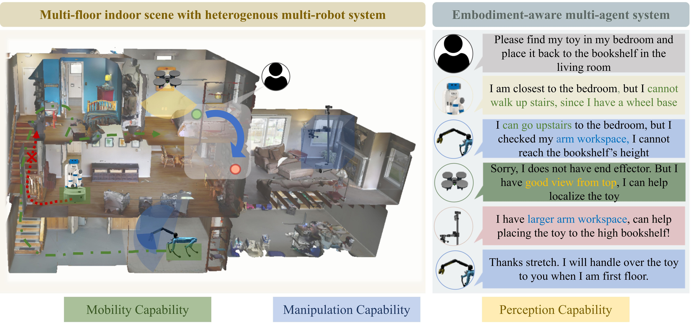
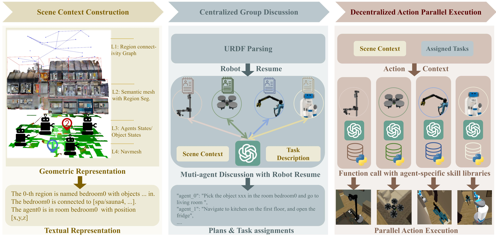
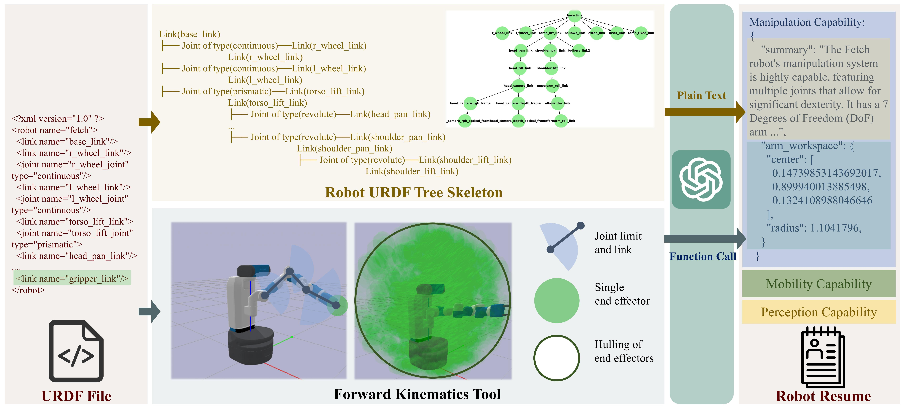
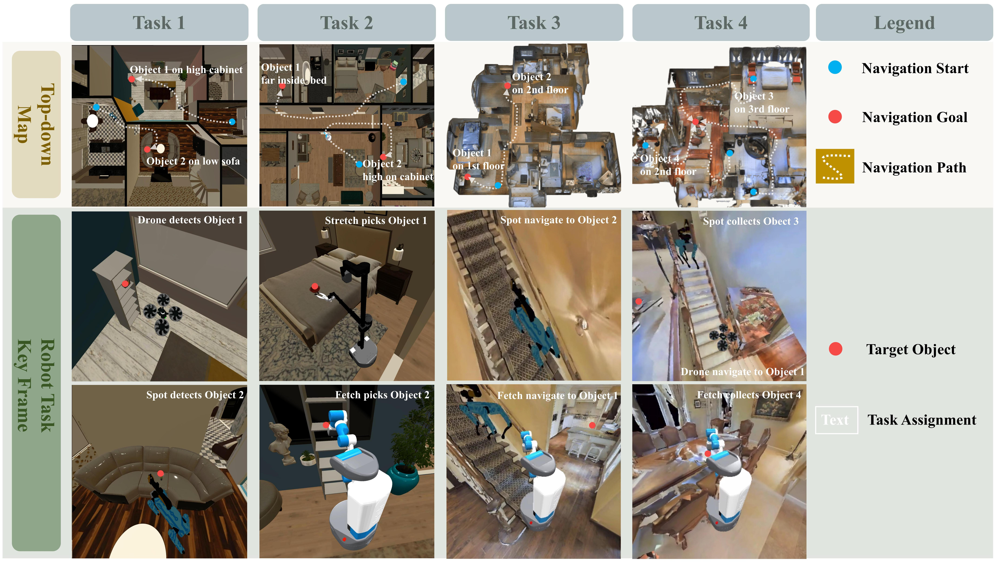

Heterogeneous multi-robot systems (HMRS) have emerged as a powerful approach for tackling complex tasks that single robots cannot manage alone. Current large-language-model-based multi-agent systems (LLM-based MAS) have shown success in areas like software development and operating systems, but applying these systems to robot control presents unique challenges. In particular, the capabilities of each agent in a multi-robot system are inherently tied to the physical composition of the robots, rather than predefined roles. To address this issue, we introduce a novel multi-agent framework designed to enable effective collaboration among heterogeneous robots with varying embodiments and capabilities, along with a new benchmark named Habitat-MAS. One of our key designs is Robot Resume: Instead of adopting human-designed role play, we propose a self-prompted approach, where agents comprehend robot URDF files and call robot kinematics tools to generate descriptions of their physics capabilities to guide their behavior in task planning and action execution. The Habitat-MAS benchmark is designed to assess how a multi-agent framework handles tasks that require embodiment-aware reasoning, which includes 1) manipulation, 2) perception, 3) navigation, and 4) comprehensive multi-floor object rearrangement. The experimental results indicate that the robot's resume and the hierarchical design of our multi-agent system are essential for the effective operation of the heterogeneous multi-robot system within this intricate problem context.

Embodiment-aware LLM-based MAS. This figure depicts how an LLM-based MAS operate a HMRS composed of dones, legged robots and wheeled robots with robotic arms, in a multi-floor house. When given a household task, the LLM-based MAS needs to undertand their respective robots' hardware specifications for task planning and assignment. The authors refer this capability as "embodiment-aware reasoning" in this work.

EMOS Framework. This figure illustrates how EMOS operates an HMRS on the Habitat-MAS platform. There are three stages: 1) Scene Context Construction involves generating scene descriptions in a bottom-up approach, relying on an ideal semantic SLAM system. 2) In Centralized Group Discussion, agents perform embodiment-aware reasoning for task planning and assignment 3) In Decentralized Action Parallel Execution, agents execute actions parallely with initial context and agent history. Precisely speaking, EMOS only includes stages 2 and 3, while stage 1 is integrated inside the Habitat-MAS platform. We include it in this diagram for completeness and clarity.


BibTex Code Here